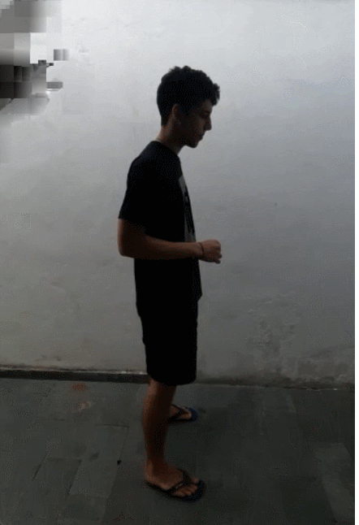

Protótipo acadêmico · Movimento Humano
Fisio em Casa
Apoio digital à cinesioterapia e reabilitação domiciliar.
Perfis clínicos de demonstração
Protótipo acadêmico · Movimento Humano
Apoio digital à cinesioterapia e reabilitação domiciliar.
Perfis clínicos de demonstração
Uma conta nova começa sem rotina — cabe ao fisioterapeuta prescrever os exercícios após avaliação inicial. Contas de fisioterapeuta são cadastradas pela clínica (veja as contas de demonstração na tela de login).
Paciente · Gonartrose
Progresso da sessão de hoje
🎯 Objetivo do Tratamento
—
💡 Aviso de responsabilidade: Os exercícios devem seguir a orientação do fisioterapeuta. Em caso de dor importante, interrompa a execução imediatamente.
Sua rotina completa de cinesioterapia prescrita para a sua condição clínica.
Simulação baseada no Google MediaPipe Pose Landmarker: rastreamento de pontos articulares, cálculo de amplitude e detecção de compensações.

🎯 Objetivo do Exercício
—
⚠️ Principais Cuidados
Como fazer (passo a passo)
Ficha Biomecânica & Cinesiológica Critério A3 (9 pts)
Articulações:Simulação de Funcionalidade Futura · Estudo MediaPipe Pose
Demonstração conceitual baseada no Google MediaPipe Pose Landmarker (identificação de 33 marcos corporais). O protótipo atual simula o biofeedback para fins acadêmicos e não utiliza a câmera em tempo real nesta etapa.
Métricas Biomecânicas Estimadas
Feedback Clínico da IA
CP & CR ImediatoExcelente padrão biomecânico! Movimento executado com transição controlada e alinhamento anatômico preservado.
Conhecimento de Performance (CP): trajetória articular e alinhamento · Conhecimento de Resultados (CR): meta de repetição e ângulo atingidos.
Como funcionará a IA com câmera no futuro?
Ciclo de Controle Motor
Alça Fechada (Closed-Loop)Como o aplicativo atua na aprendizagem e refinamento sensório-motor do paciente:
Fundamentação Biomecânica
Critério Técnico (9 pts)Exercício
3 séries × 10 repetições
Como foi a execução?
Aderência semanal ao plano terapêutico
Acompanhamento visual de assiduidade e consistência nos treinos.
Insight da IA · apoio ao acompanhamento clínico
—
Histórico de sessões recentes
Os dados apresentados são ilustrativos e fazem parte do protótipo acadêmico — não substituem prontuário profissional formal.
Fisioterapeuta
Selecione um paciente para revisar a prescrição cinesioterapêutica e evolução.
Condição
Exercícios prescritos na conduta
Insight da IA
—
Maria Silva
Paciente · Gonartrose🎯 Objetivo Terapêutico
Melhorar a mobilidade, reduzir a dor e fortalecer os membros inferiores com foco na articulação do joelho e estabilidade funcional.
📋 Orientações Gerais
Evitar impacto repetitivo em superfícies rígidas. Realizar os exercícios em dias alternados ou conforme tolerância. Respeitar o limite de dor.
🤸 Exercícios Prescritos para a Condição
Alternar Paciente de Demonstração
Experimente a rotina de cada um dos 5 perfis clínicos:
Persistência de Dados (JSON)
Dados gravados offline no navegador sem envio a servidores externos.
Aviso de Responsabilidade e LGPD
Este aplicativo é um projeto acadêmico de caráter educativo. Os exercícios devem ser orientados por um fisioterapeuta. Em caso de dor importante, interrompa a execução. Os dados são armazenados localmente no seu dispositivo em conformidade com as boas práticas de proteção de dados (LGPD).
Fisio em Casa — protótipo acadêmico (A3, Movimento Humano · USJT).
Proposta Tecnológica
A proposta prevê a futura integração da tecnologia Google MediaPipe Pose Landmarker para análise computacional com câmera de celular, estimando ângulos articulares e fornecendo biofeedback durante os movimentos.Aviso Ético e Clínico
Este protótipo acadêmico é uma ferramenta de suporte educativo. A escolha, progressão e liberação dos exercícios dependem rigorosamente da avaliação de um fisioterapeuta. O sistema não realiza diagnóstico nem substitui a conduta profissional humana.
Projeto A3 — UC Movimento Humano · Universidade São Judas Tadeu.